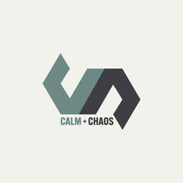

Trade Mark Journal No.2025/044 31 October 2025
UK00004281680 21 October 2025 (25,41,44)

- Class 25
- Exercise wear; Gymwear; Clothes for sport; Clothes for sports; Yoga socks; Clothes; Gym shorts; Gym suits; Gym boots; Jogging sets [clothing]; Clothing for gymnastics; Jogging bottoms [clothing]; Clothing; Athletic clothing; Headbands for clothing; Clothing for sports; Sports clothing; Jogging pants; Yoga shirts; Tops [clothing]; Yoga pants.
- Class 41
- Health and fitness training; Sports and fitness; Exercise and fitness classes; Fitness and exercise instruction; Physical fitness instruction; Physical fitness centres; Sports and fitness services; Personal trainer services [fitness training]; Providing fitness and exercise facilities; Physical fitness centre services; Exercise [fitness] advisory services; Physical fitness education services; Conducting physical fitness conditioning classes; Health and wellness training; Consultancy relating to physical fitness training; Physical fitness centres (Operation of -); Health club services [exercise]; Training services relating to fitness; Conducting fitness classes; Physical fitness assessment services for training purposes; Provision of health club [physical exercise] facilities; Education services relating to physical fitness; Educational services relating to physical fitness; Provision of educational health and fitness information; Instruction courses relating to physical fitness; Physical fitness instruction for adults and children; Conducting training sessions on physical fitness online; Training in yoga; Gym activity classes; Health club services; Sports training; Training in sports; Physical health education; Providing health club and gymnasium services; Exercise classes; Provision of educational services relating to fitness; Training related to nutrition; Supervision of physical exercise; Gymnasium services relating to weight training; Providing of training in the field of health care and nutrition; Physical training services; Entertainment in the nature of weight lifting competitions; Strength and conditioning training; Personal coaching [training]; Life coaching (training); Training services relating to health and safety; Recreation and training services; Education and training in the field of occupational health and safety; Training services relating to occupational health; Providing instruction and equipment in the field of physical exercise; Entertainment services in the nature of a wrestling club; Education and training services in the field of occupational health and safety; Sports club services; Personal trainer services; Training of sports players; Health and fitness club services; Health club [fitness] services; Exercise [fitness] training services; Fitness and exercise training services; Health club services [health and fitness training]; Fitness club services; Physical fitness consultation; Physical fitness training services; Fitness training services; Tuition in physical fitness; Physical fitness tuition; Personal fitness training services; Rental of sports or exercise equipment; Providing obstacle course training gym facilities; Sports coaching; Keep-fit instruction; Education services relating to yoga; Meditation training; Exercise instruction.
- Class 44
- Health care relating to relaxation therapy; Mental health services; Beauty care services provided by a health spa; Health care relating to therapeutic massage; Health center services; Health clinic services; Health centers; Health consultancy; Health care; Occupational health consultancy; Nutrition counseling; Health screening; Public health counseling; Nutrition and dietetic consultancy; Nutrition counselling; Fitness testing; Therapeutical pilates; Massage and therapeutic shiatsu massage; Physiotherapy; Sports massage; Massage; Hydrotherapy.
Calm + Chaos LTD